资源
- GAMES104-现代游戏引擎：从入门到实践_哔哩哔哩_bilibili
- GAMES104 - 现代游戏引擎入门必修课 (boomingtech.com)
- Piccolo 社区 - 游戏引擎爱好者的新家园 (piccoloengine.com)
- BoomingTech/Piccolo: Piccolo (formerly Pilot) – mini game engine for games104 (github.com)
- GAMES104：现代游戏引擎，从理论到实践 - 知乎 (zhihu.com)
课程
第十二节：游戏引擎中的粒子和声效系统
Effects
{kind=link}
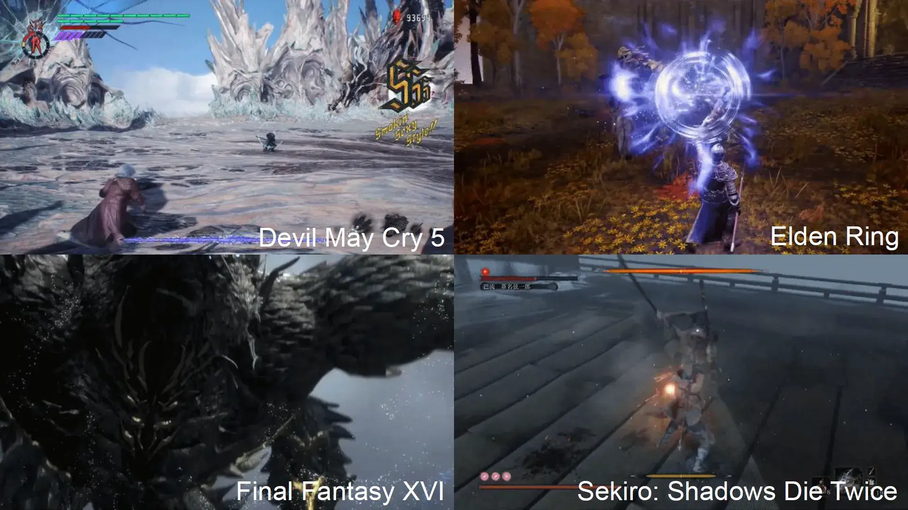
粒子系统特效是提升游戏效果的重要手段！
History of Particle System
粒子系统的历史，最早也源自电影
{kind=link}
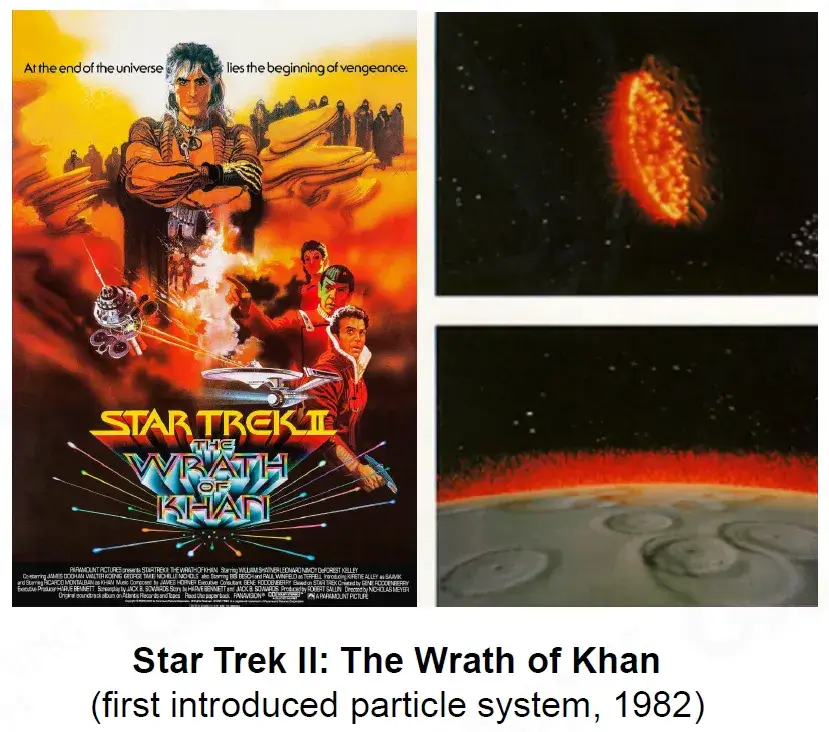
“A particle system is a collection of many many minuteparticles that together represent a fuzzy object. Over aperiod of time, particles are generated into a systemmove and change from within the system, and die fromthe system."
“粒子系统是许多微小粒子的集合，它们共同代表一个模糊物体。在一段时间内，粒子会生成一个系统，在系统内部移动和变化，然后从系统中消亡。”
——William Reeves, "Particle Systems——A Technique forModeling a Class of Fuzzy Objects," ACM Transactionson Graphics 2:2 (April 1983), 92.
——William Reeves，《粒子系统——一种对模糊物体进行建模的技术》，ACM Transactionson Graphics 2:2（1983 年 4 月），92。
Particle
{kind=link}
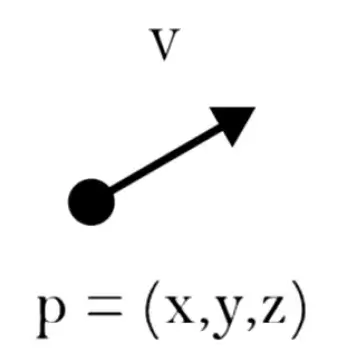
A particle in game is usually a sprite or 3D model, with the following attributes:
游戏中的粒子通常是一个精灵或 3D 模型，具有以下属性：
-
Position
位置
-
Velocity
速度
-
Size
大小
-
Color
颜色
-
Lifetime
寿命
……
Particle's Life Cycle
粒子生命周期
{kind=link}
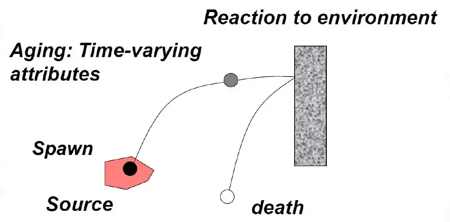
Particle Emitter
粒子发射器
{kind=link}
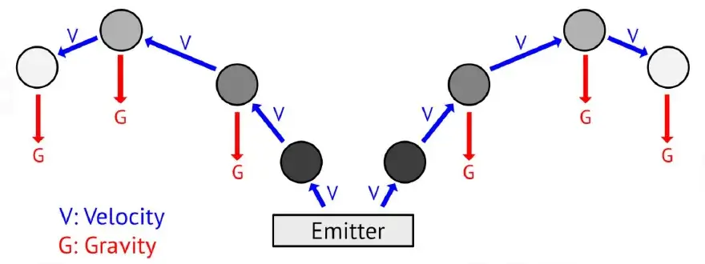
Particle Emitter is used to define the particles simulation
粒子发射器用于定义粒子模拟
-
Specify the spawn rules
指定生成规则
-
Specify simulation logic
指定模拟逻辑
-
Describe how to render particles
描述如何渲染粒子
Particle System
{kind=link}
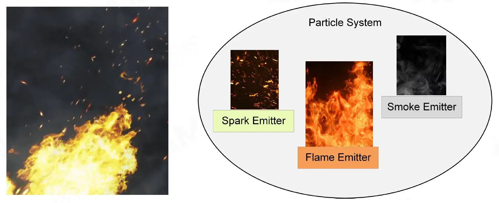
A particle system is a collection of individual emitters
粒子系统是单个发射器的集合
A simple case, just combine different emitters
一个简单的例子，只需组合不同的发射器
Particle Spawn Position
{kind=link}
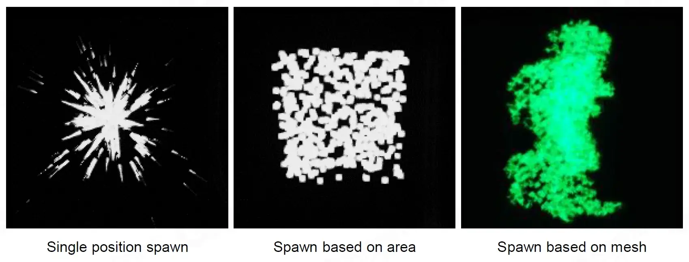
-
Single position spawn
单一位置生成
-
Spawn based on area
根据区域生成
-
Spawn based on mesh
根据网格生成
Particle Spawn Mode
粒子生成模式
Continuous
连续
-
variable spawn rate per frame
每帧生成率可变
-
time, distance based, etc.
基于时间、距离等
Burst
爆发
-
all particle spawn and simulated at once
所有粒子同时生成并模拟
Simulate
模拟
Common forces
共同力量
{kind=link}
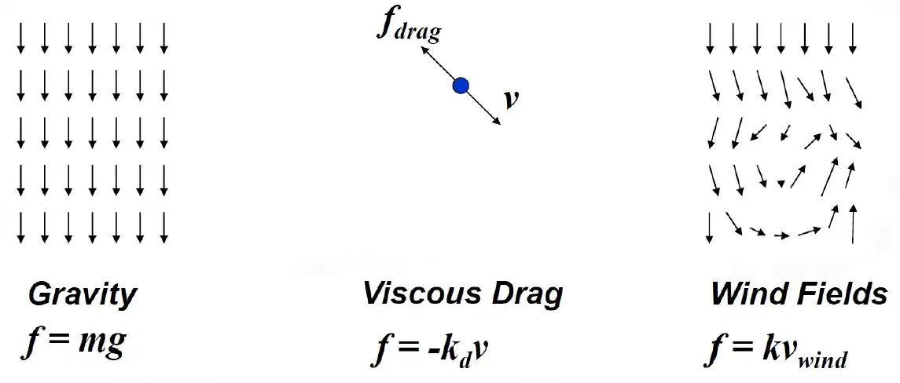
Simulate controls how the particles change over time
模拟控制粒子随时间的变化
{kind=link}
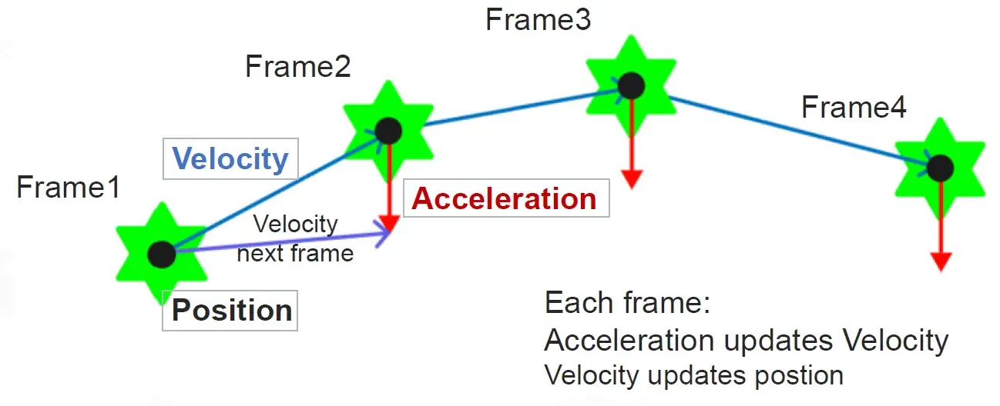
Each frame:
每帧：
Acceleration updates Velocity
加速度更新速度
Velocity updates postion
速度更新位置
-
Simulate gravity
模拟重力
-
Simulate gravity & rotation
模拟重力和旋转
-
Simulate gravity & color
模拟重力和颜色
-
Simulate gravity & size
模拟重力和大小
-
Collision
碰撞
Particle Type
粒子类型
{kind=link}
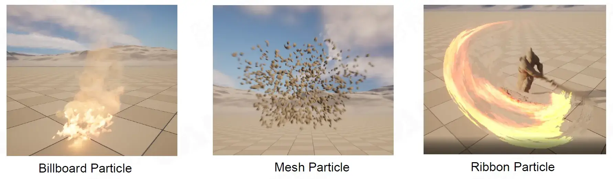
-
Billboard Particle
广告牌粒子
-
Mesh Particle
网络粒子
-
Ribbon Particle
带状粒子
Billboard Particle
广告牌粒子
{kind=link}
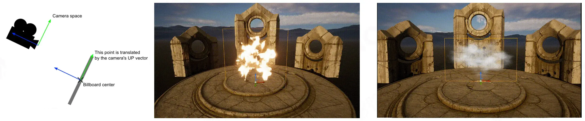
粒子只在平面上显示，这个平面始终朝着相机，减少计算量。
Each particle is a sprite
每个粒子都是一个精灵
-
Appears to be 3D
看起来像 3D
-
Always face the camera
始终面向相机
Mesh Particle
网格粒子
{kind=link}
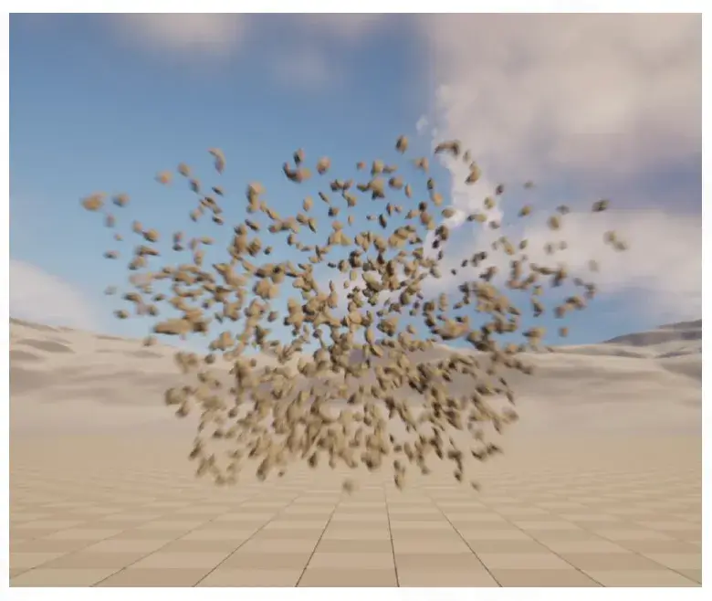
Each particle is a 3D model.
每个粒子都是一个 3D 模型。
-
Rocks coming from a explosion
爆炸产生的岩石
Ribbon Particle
带状粒子
{kind=link}
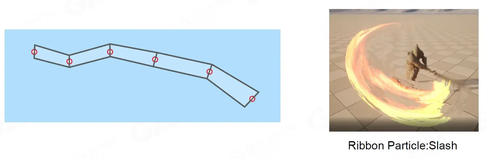
挥剑特效。
A strip is created by connecting the particles and rendering quads between the adjacent particles.
通过连接粒子并在相邻粒子之间渲染四边形来创建条带。
-
particles (represented as red dots)
粒子（表示为红点）
{kind=link}
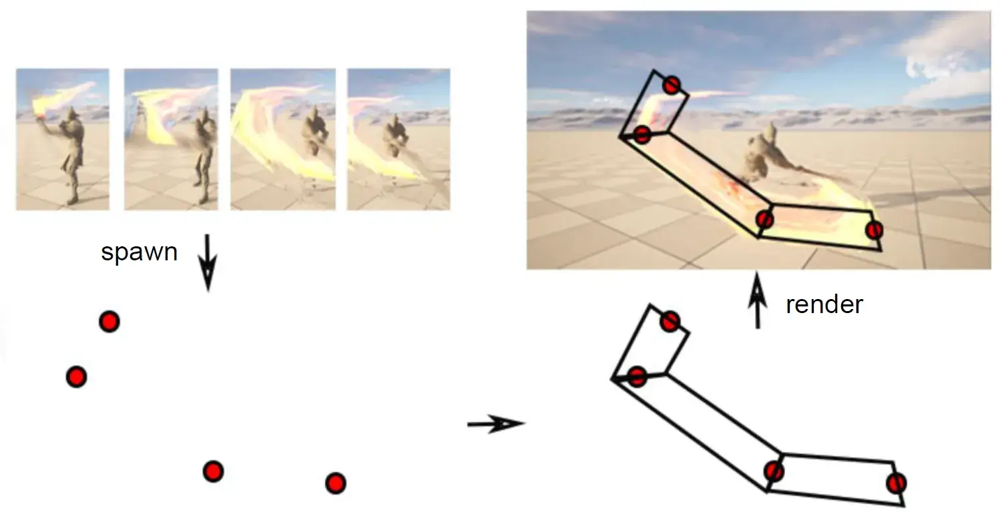
No smoothing shape
无平滑形状
{kind=link}
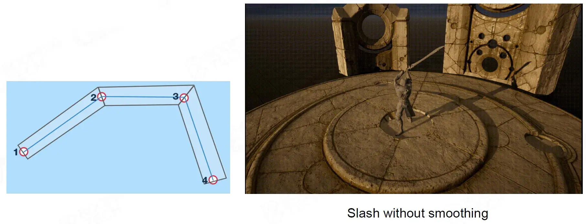
-
with sharp angles
有锐角
{kind=link}
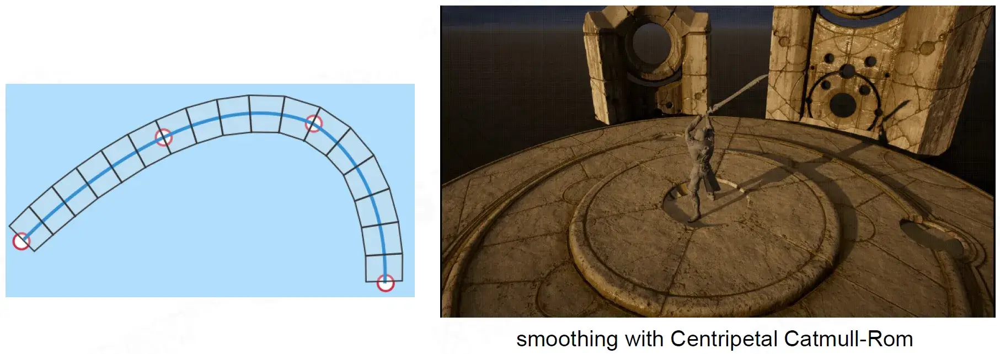
Smoothing with Centripetal Catmull-Rom interpolation
使用向心 Catmull-Rom 插值进行平滑
-
add extra segments between particles
在粒子之间添加额外的段
-
can set the number of segments
可以设置段数
-
requires more CPU
需要更多 CPU
Particle System Rendering
粒子系统渲染
Alpha Blending Order
Alpha 混合顺序
{kind=link}
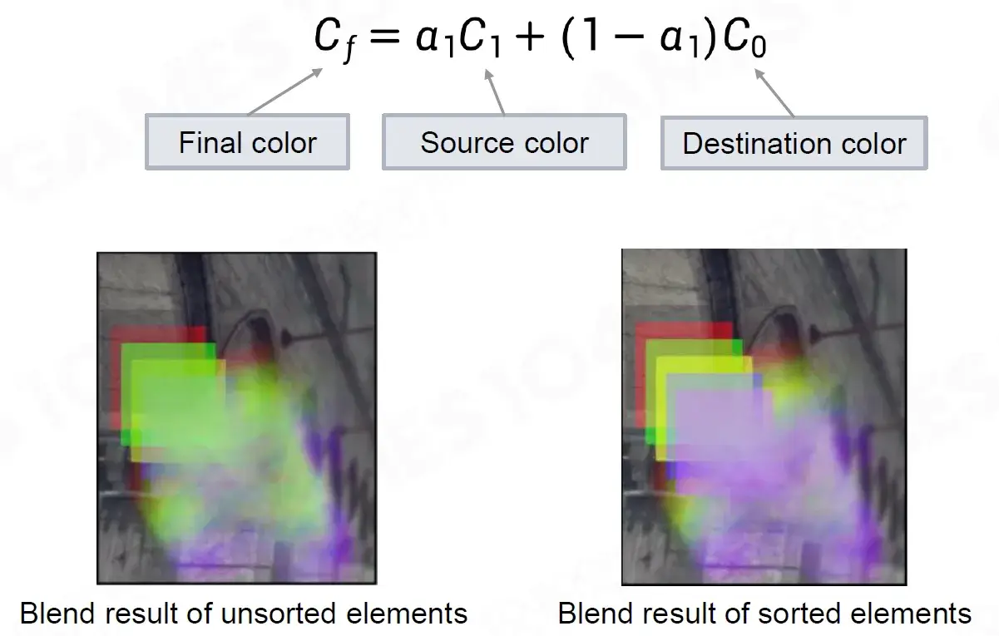
粒子有可能是透明的，如果没有排序会导致错误的渲染结果。
Particle Sort
粒子排序
{kind=link}
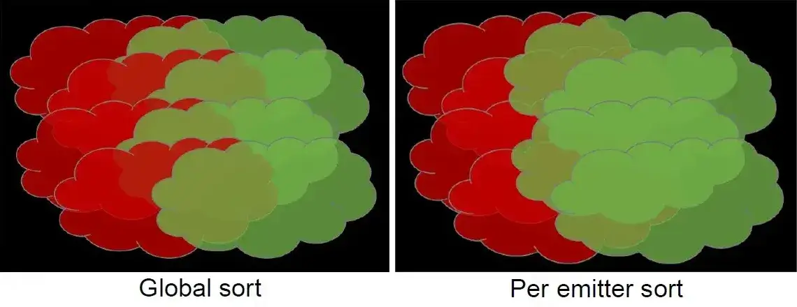
Global sort 是正确的，Per emitter sort 错误。
Sorting mode
排序模式
-
Global
全局
-
Accurate, but large performance consumption
准确，但性能消耗大
-
-
Hierarchy: Per system → Per emitter → Within emitter
层次结构：每个系统 → 每个发射器 → 发射器内
Sort rules
排序规则
-
Between particles: based on particle distance with camera
粒子之间：基于粒子与相机的距离
-
Between systems or emitters: bounding box
系统或发射器之间：边界框
Full-Resolution Particles
全分辨率粒子
{kind=link}
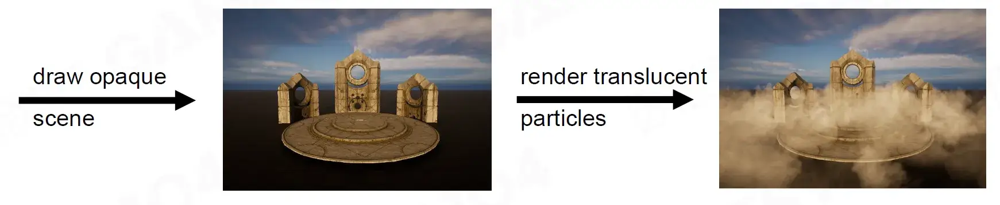
-
Costly
成本高昂
-
Worst case as particles fill the screen
最坏的情况是颗粒会填满屏幕
Low-Resolution Particles
低分辨率粒子，计算粒子系统时，在较低分辨率上进行。
{kind=link}
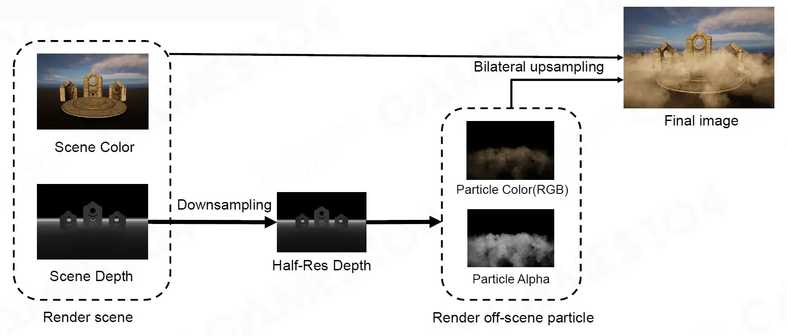
GPU Particle
GPU 粒子
Processing Particles on GPU
在 GPU 上处理粒子
Why use GPU?
为什么使用 GPU？
-
Highly parallel workload, suitable for simulation of large numbers of particles
高度并行的工作负载，适合模拟大量粒子
-
Free your CPU to do game code
释放您的 CPU 来执行游戏代码
-
Easy to access depth buffer to do collision
轻松访问深度缓冲区以进行碰撞
GPU Particles-Frame Overview
GPU 粒子帧概述
{kind=link}
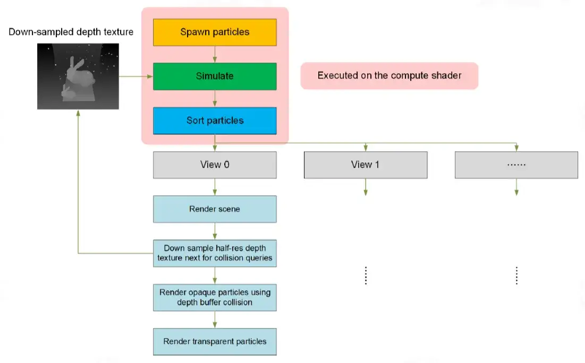
Compute shader provides high-speed general purpose computing and takes advantage of the large numbers of parallel processors on the GPU
计算着色器提供高速通用计算，并利用 GPU 上的大量并行处理器
Initial State
初始状态
The diagram on the right shows an empty pool containing a maximum of 8 particles, starting with all 8 slots in a DEAD usable state
右图显示一个空池，最多包含 8 个粒子，所有 8 个槽位都处于 DEAD 可用状态
{kind=link}
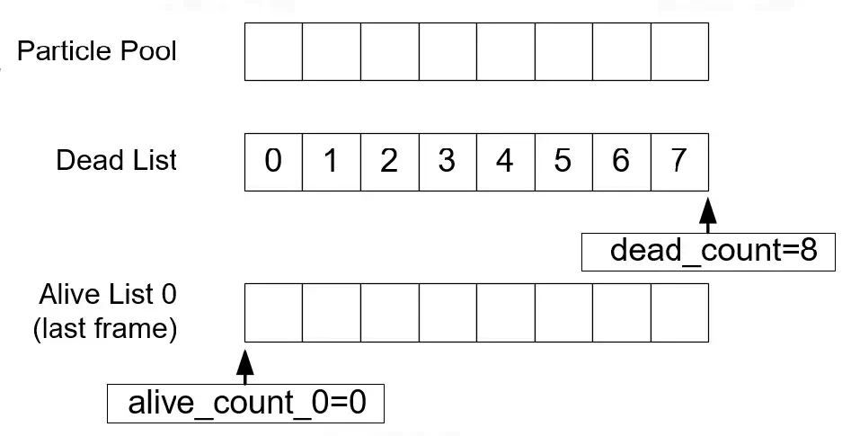
Particle pool is a single buffer storage containing all particles data
粒子池是一个包含所有粒子数据的缓冲存储器
Spawn Particles
生成粒子
{kind=link}
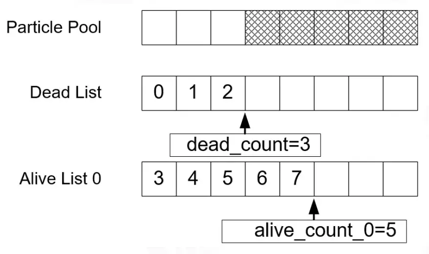
The diagram on the right shows the emission of 5 particles
右（上）图显示了 5 个粒子的发射
-
Dispatch 5 compute shader threads to dothe spawn calculation
调度 5 个计算着色器线程进行生成计算
-
Access to the dead list and the alive listneeds to be atomic
对死亡列表和存活列表的访问需要是原子的
Simulate
模拟
{kind=link}
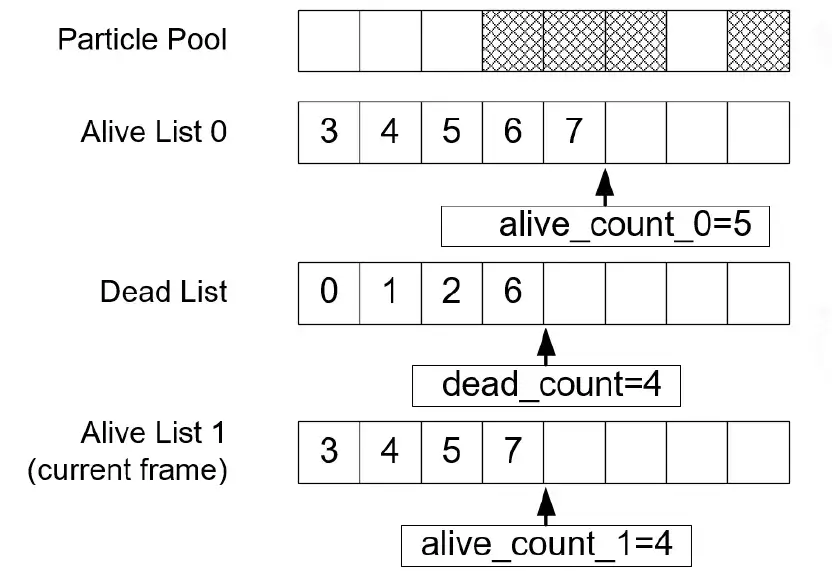
Calculate position, velocity, doing depth collision etc. And writing data back to particle pool (right diagram shows if particle 6 is dead)
计算位置、速度、进行深度碰撞等。并将数据写回粒子池（右图显示粒子 6 是否已死亡）
-
Dispatch alive_count_0 threads
调度 alive_count_0 线程
-
Access to dead list and alive list 1 should be atomic
对死亡列表和存活列表 1 的访问应为原子操作
{kind=link}
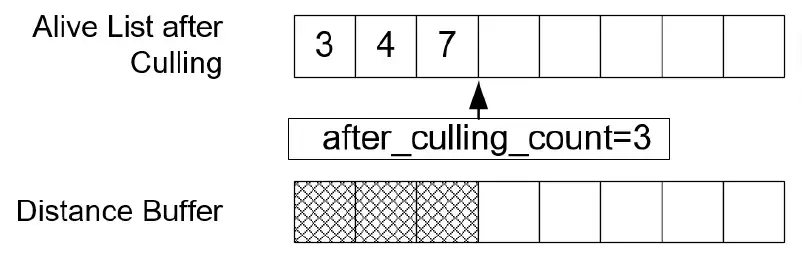
Do frustum culling, and write calculated distance to distance buffer (right diagram shows if particle 5 is culled)
进行视锥剔除，并将计算出的距离写入距离缓冲区（右图显示粒子 5 是否被剔除）
Sort, Render and Swap Alive Lists
排序、渲染和交换活动列表
{kind=link}
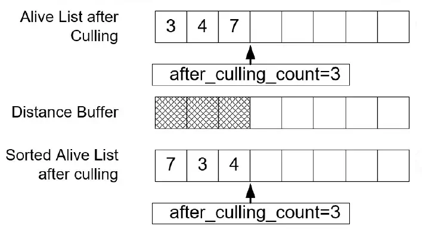
Sort alive list after culling according to distance buffer
根据距离缓冲区对剔除后的存活列表进行排序
{kind=link}
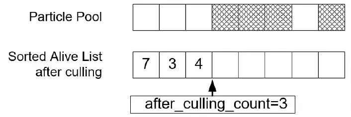
Render particles in sorted alive list after culling
剔除后，在排序的存活列表中渲染粒子
{kind=link}
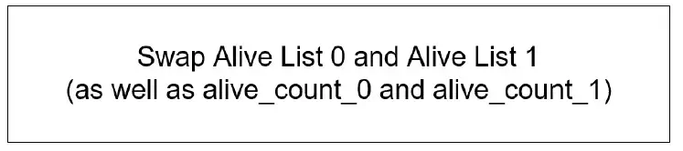
Swap alive list
交换激活列表
Parallel Mergesort
计算排序时使用归并排序。
{kind=link}
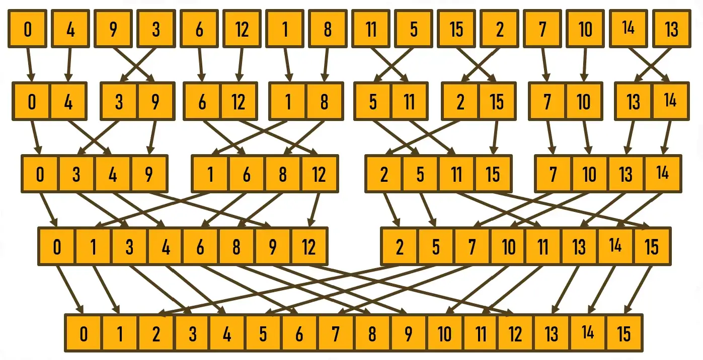
{kind=link}
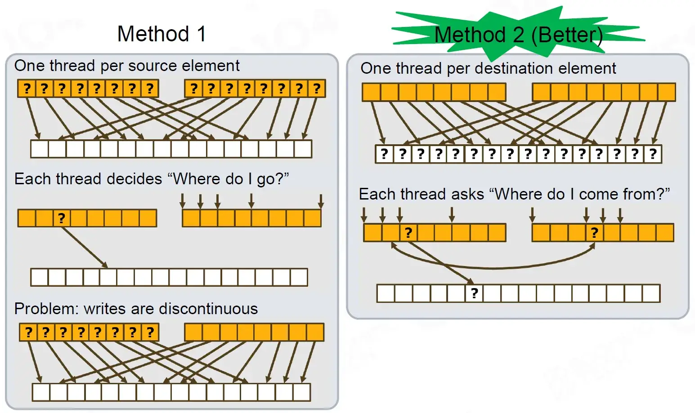
Depth Buffer Collision
{kind=link}
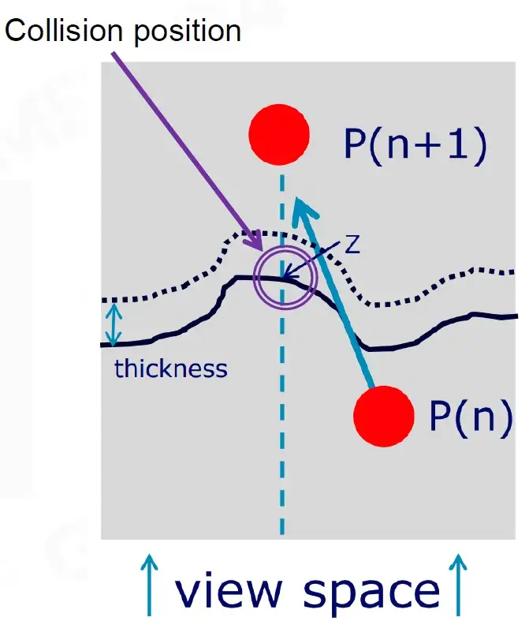
-
Reproject particle position to previous frame screenspace texture coordinate
将粒子位置重新投影到前一帧屏幕空间纹理坐标
-
Read depth value from presious frame depth texture
从前一帧深度纹理读取深度值
-
Check if particle is colliding with the depth buffer, but not completely behind it (where thickness value isused)
检查粒子是否与深度缓冲区发生碰撞，但未完全位于其后方（使用厚度值的地方）
-
If collision is happened, calculate surface normal andbounce off the particle
如果发生碰撞，则计算表面法线并从粒子上弹起
Advanced Particles
高级粒子系统
Crowd Simulation
云模拟
Animated Particle Mesh
动画粒子网格
{kind=link}
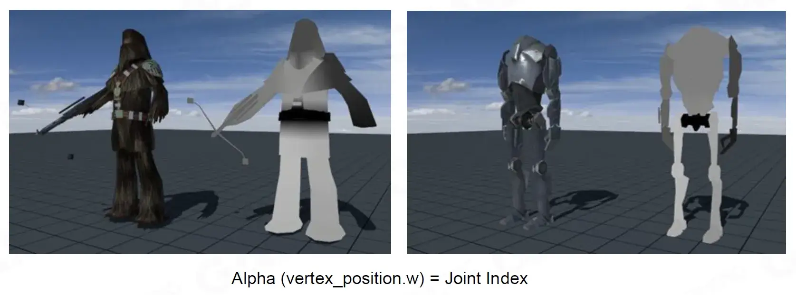
Particle Animation Texture
粒子动画纹理
{kind=link}
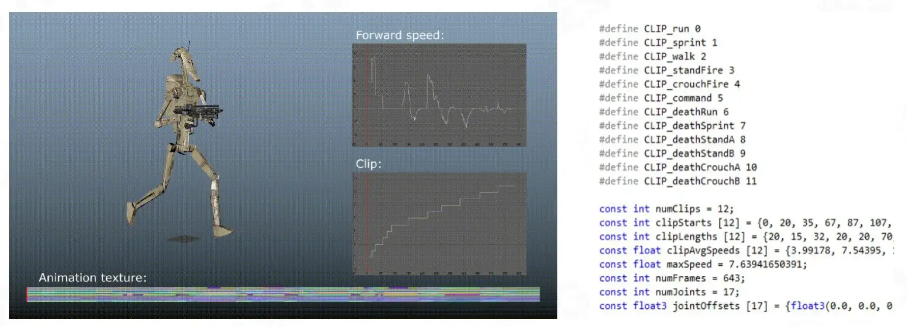
Navigation Texture
导航纹理
{kind=link}
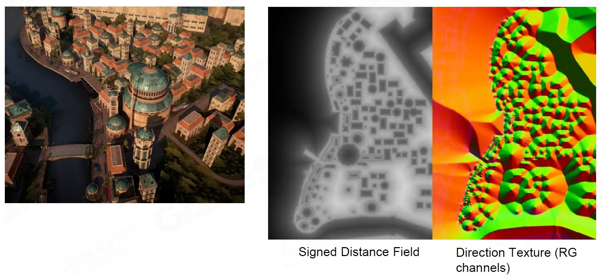
Crowds-Runtime Behavior
人群-运行时行为
{kind=link}
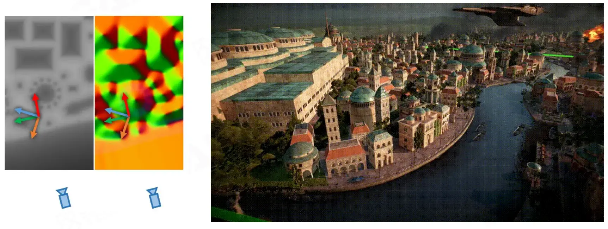
-
Design target locations to guide the movement of crowds
设计目标位置来引导人群的移动
-
The desire moving towards the target location, pushing away from blocking geometry, all become forces to influence the movement of crowds (if close enough, the camera also acts as a force)
向目标位置移动的欲望、远离阻挡几何体，都成为影响人群移动的力量（如果距离足够近，相机也会起到作用）
Advanced Particle Demos
高级粒子演示
{kind=link}
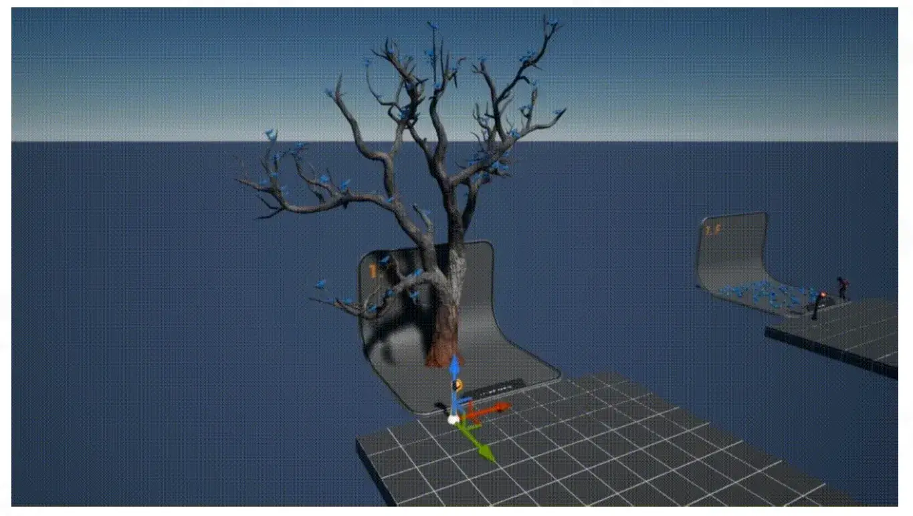
-
Skeleton mesh emitter
骨架网格发射器
-
Dynamic procedural splines
动态程序样条线
-
Reactions to other players
对其他玩家的反应
-
Interacting with environment
与环境互动（人靠近时鸟飞走）
……
Utilizing Particle System in Games
在游戏中使用粒子系统
Design Philosophy-Preset Stack-Style Mddules
设计理念 - 预设堆栈式模块
{kind=link}
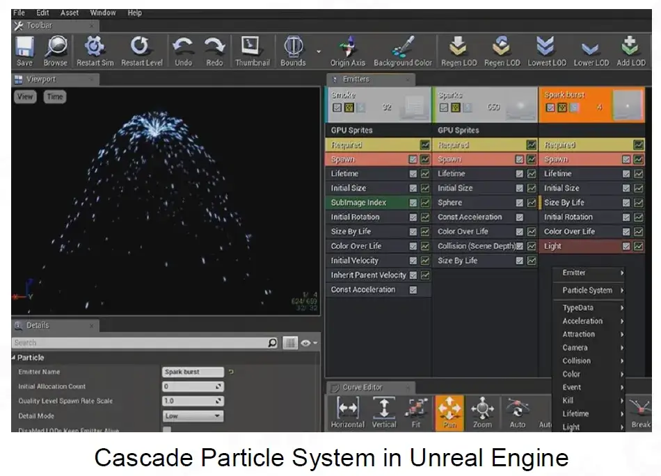
Pros
优点
-
Fast to add behaviors as stacked modules
快速添加行为作为堆栈模块
-
Non technical artists have lots of control via a suite of typical behaviors
非技术艺术家可以通过一套典型行为进行大量控制
-
Easy to understand at a glance
一目了然
Cons
缺点
-
Fixed functions, new feature requires new code
固定功能，新功能需要新代码
-
Code-based, divergence in game team code
基于代码，游戏团队代码存在分歧
-
Fixed particle data, data sharing is mostly impossible
固定粒子数据，数据共享几乎不可能
Design Philosophy-Graph-Based Design
设计理念-基于图的设计
{kind=link}
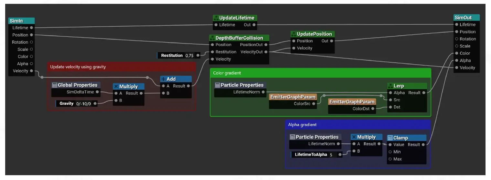
-
Parameterizable and shareable graphs asset
可参数化和可共享的图形资产
-
Less code divergence
更少的代码分歧
-
Provide modular tools instead of hardcoded features
提供模块化工具而不是硬编码功能
Hybrid Design
混合设计
{kind=link}
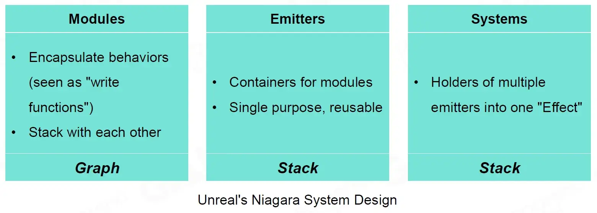
-
Graphs give total control
图提供全面控制
-
Stacks provide modular behavior and glance readability
堆栈提供模块化行为和一目了然的可读性
Sound System
Audio
{kind=link}
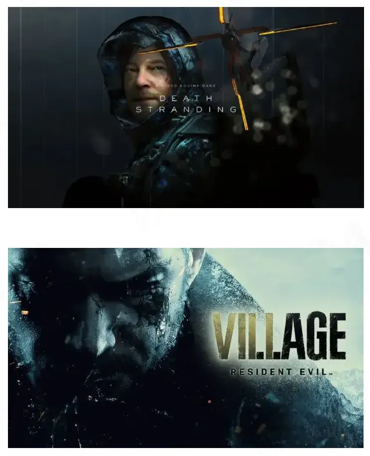
-
Entertains the player
娱乐玩家
-
Enhances the realism
增强真实感
-
Establishes atmosphere
营造氛围
Volume
音量
The amplitude of the sound wave
声波的振幅
{kind=link}
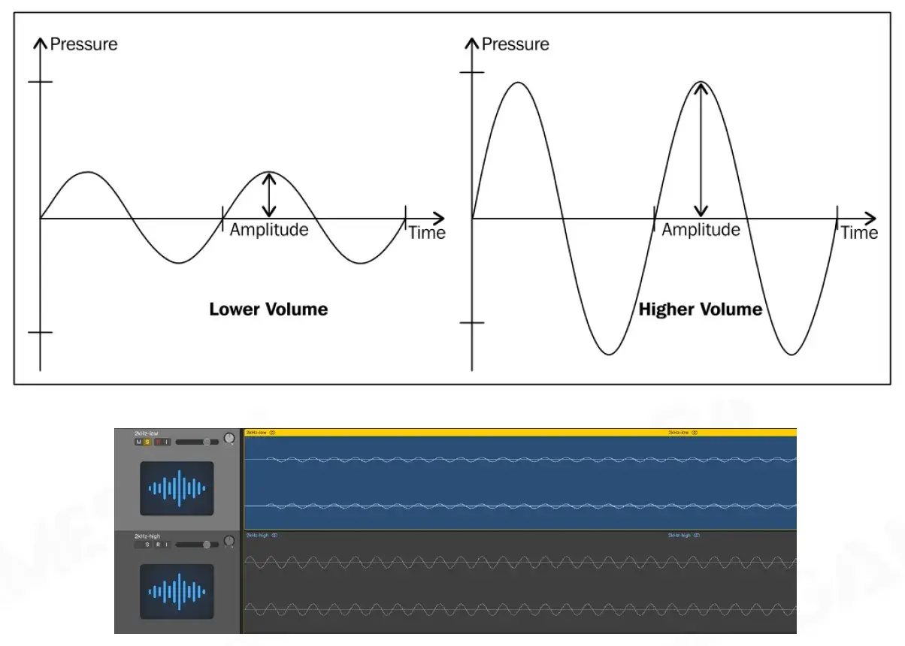
Volume - Terminologies
音量 - 术语
Sound Pressure (): Local deviation from the ambient atmospheric pressure caused by sound wave, SI unit ()
声压 ()：声波引起的与周围大气压力的局部偏差，SI 单位 ()
Particle Velocity (): The velocity of a particle in a medium as it transmits a wave, Sl unit ()
**粒子速度 ()：**介质中粒子传播波的速度，SI 单位 ()
Sound Intensity (): The power carried by sound waves per unit area in a direction perpendiculato that area,Sl unit:
**声强 ()：**声波在垂直于该面积的方向上每单位面积携带的功率，SI 单位：
Sound Pressure Level (): A logarithmic measure of the effective pressure of a sound relative to a reference yalue,SI unit ()
**声压级 ()：**相对于参考值的声音有效压力的对数测量，SI 单位 ()
: Reference sound pressure, the threshold of human hearing, commonly used in air is
：参考声压，即人类听觉的阈值，在空气中常用的是
(roughly the sound of a mosquito flying 3m away)
（大约相当于 3 米外蚊子飞行的声音）
Pitch
音调
{kind=link}
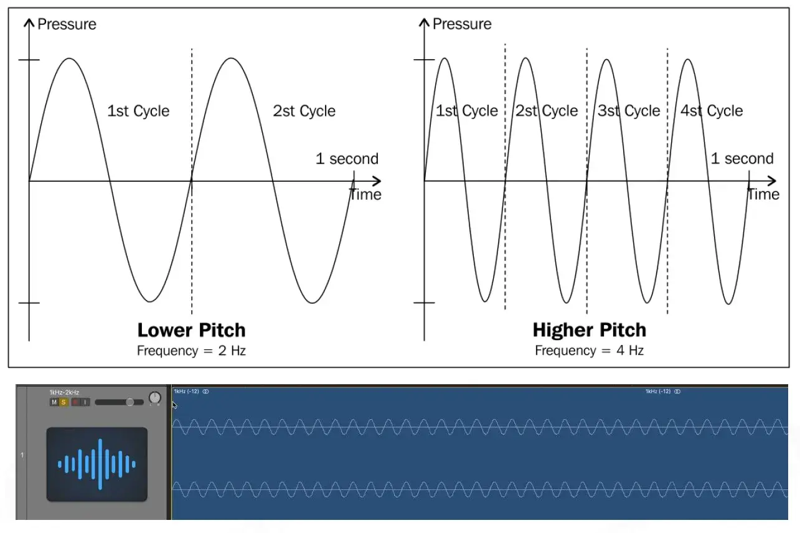
-
Determines how high or low the sound is
确定声音的高低
-
Depends on the frequency of the soundwave
取决于声波的频率
Timbre
音色
{kind=link}
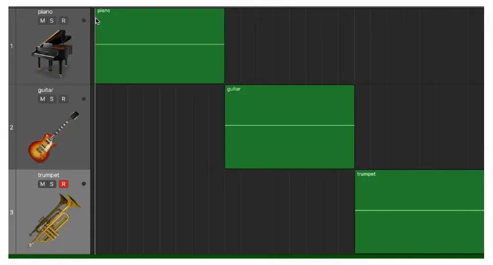
Combinations of overtones or harmonics
泛音或谐波的组合
-
frequencies
频率
-
relative intensities
相对强度
Phase and Noise Cancelling
相位和噪声消除
Same frequency, amplitude, but in different phase
频率、振幅相同，但相位不同
{kind=link}
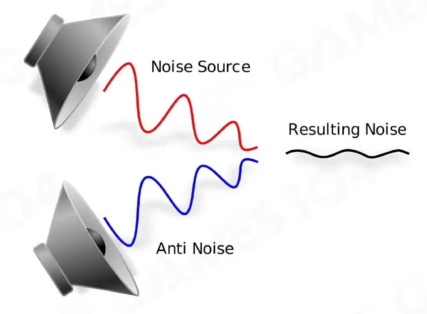
降噪耳机的原理，发出 Anti Noise 抵消 Noise Source 的纵波。
Human Hearing Characteristic
人类听觉特性
{kind=link}
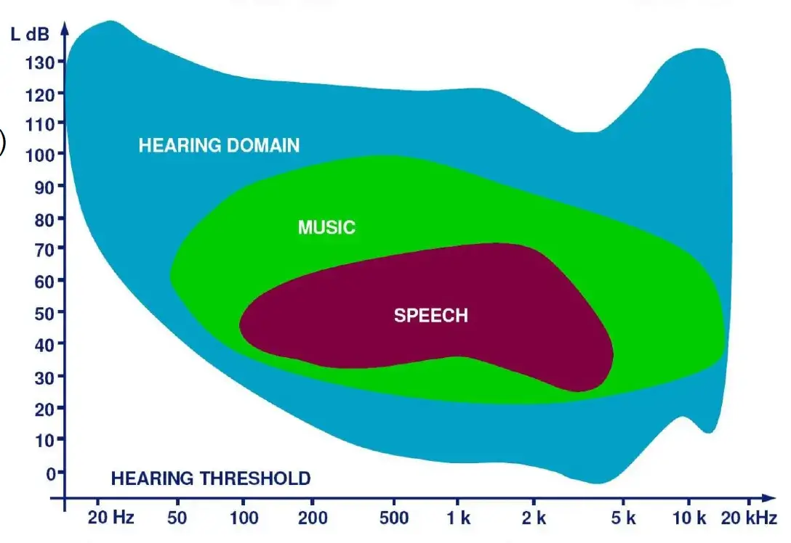
The audible sound of human ear
人耳可听到的声音
-
frequency range: 20-20KHz
频率范围：20-20 KHz
-
sound pressure level range (0-130db)
声压级范围（0-130db）
Digital Sound
电子声
Pulse-code Modulation (PCM)
脉冲编码调制 (PCM)
{kind=link}
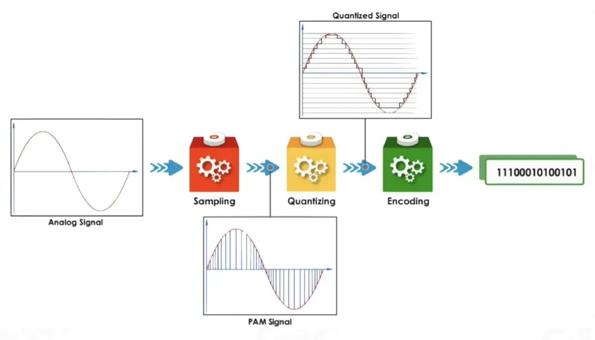
Standard method for encoding a sampledanalog sound signal
对采样模拟声音信号进行编码的标准方法
-
Sampling
采样
-
Quantizing
量化
-
Encoding
编码
Sampling
采样
Sample Frequency: Samples per second (Hz)
采样频率：每秒采样数 (Hz)
{kind=link}
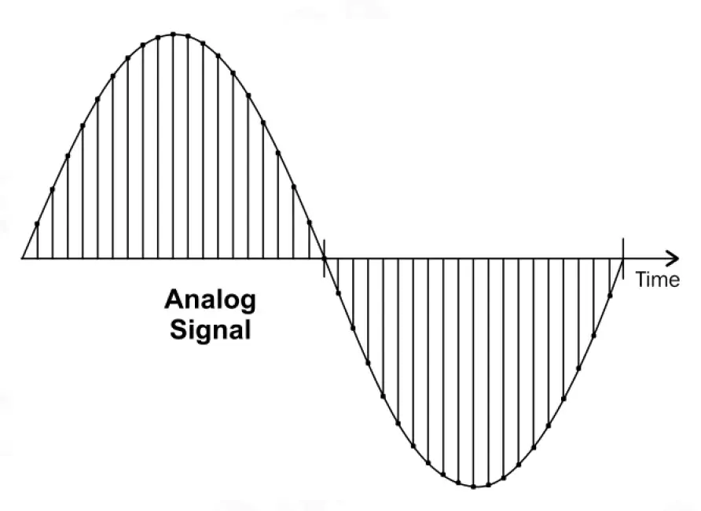
Nyquist Shannon Sampling Theorem: The minimum sampling frequency ofa signal that it will not distort its underlying information, should be double the frequency of its highest frequency component
奈奎斯特香农采样定理：信号的最低采样频率应为其最高频率分量频率的两倍，以免扭曲其底层信息
Quantizing
量化
{kind=link}
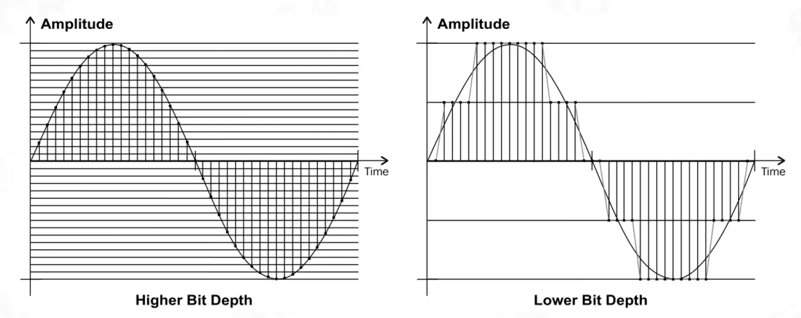
bit-depth: bit depth is the number of bits of information in each sample
位深度：位深度是每个样本中的信息位数
| Format | Quality | Storage | Multi-channel | Patent |
|---|---|---|---|---|
| WAV (uncompressed) | ⭐⭐⭐ | ⭐ | ⭐⭐⭐ | ⭐⭐⭐ |
| FLAC (lossless) | ⭐⭐⭐ | ⭐⭐ | ⭐⭐⭐ | ⭐⭐⭐ |
| MP3 (lossy) | ⭐ | ⭐⭐⭐ | ⭐ | ⭐ |
| OGG (lossy) | ⭐ | ⭐⭐⭐ | ⭐⭐⭐ | ⭐⭐⭐ |
对于游戏引擎中，一般使用 OGG，MP3 不支持多声道且要付一笔版权费。
3D Audio Rendering
3D 声音渲染
3D Sound Sources
{kind=link}
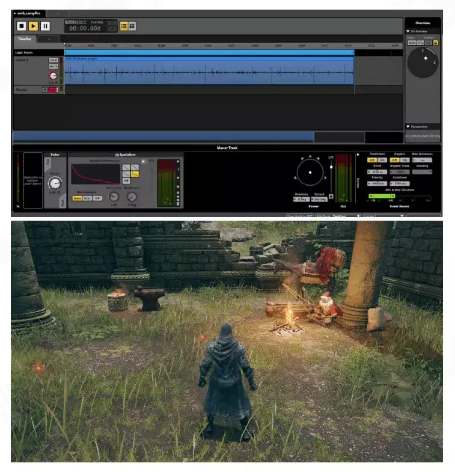
-
a mono-phonic audio signal
单声道音频信号
-
emanating from a specific position
来自特定位置
Listener
听者
{kind=link}
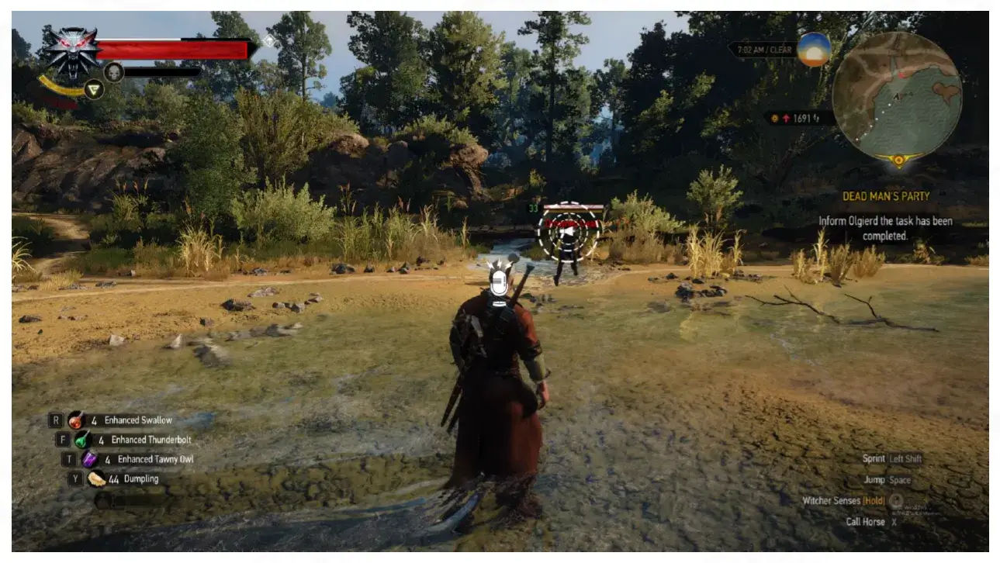
A "virtual microphone"
“虚拟麦克风”
-
position
位置
-
velocity
速度
-
orientation
方向
Spatialization
空间化
{kind=link}
The techniques used to orient the sound relative to a listener
用于将声音定位到听众的技术
-
Panning
声像
-
Soundfield
声场
-
Binaural Audio
双耳音频
Panning
Channel
声像 - 声道
{kind=link}
Distribution of an audio signal into a new stereo or multi-channel sound field
将音频信号分配到新的立体声或多声道声场中
Panning
声像
Linear Panning
线性声像
{kind=link}
-
Main idea: for a stereo signal with gain 1, the gains of the left and right channels should sum to 1
主要思想：对于增益为 1 的立体声信号，左右声道的增益总和应为 1
-
Human perception of loudness is actually proportional to the power of a sound wave
人类对响度的感知实际上与声波的功率成正比
-
Power is equal to the square of the signal's amplitude
功率等于声波振幅的平方
-
The power will drop when the sound is panned in the middle ()
当声音在中间时，功率会下降（）
{kind=link}
Equal Power Panning
等功率平移
{kind=link}
Retain constant loundness by holding the powerconstriant during the pan, instead of holding the amplitude constant
通过在平移过程中保持功率约束来保持恒定的响度，而不是保持振幅恒定
Thera are several possible solutions to this equation, one is a sine/cosine equation
通过在平移过程中保持功率约束来保持恒定的响度，而不是保持振幅恒定
Attenuation
衰减，帮助玩家判断位置。
{kind=link}
Volume will attenuate as the listener moves away from it
随着听众远离，音量会减弱
In real world, the sound pressure () of a spherical sound wave decreases as from the centre of the sphere.
在现实世界中，球形声波的声压（）从球心开始以 的速度减小。
Attenuation Shape - Sphere
衰减形状 - 球体
{kind=link}
Useful for most spot sounds as it models how sound propagates in the real world
适用于大多数点声音，因为它模拟了声音在现实世界中的传播方式
Attenuation Shape - Capsule
衰减形状 - 胶囊
{kind=link}
Useful for things like water pipes, where the sound doesn't want to appear to come from a single, specific point in space - the sound of gurgling water would follow the length of the pipe
适用于水管等物体，声音不会从空间中的某个特定点发出 - 潺潺的水声会沿着水管的长度传播
Attenuation Shape - Box
衰减形状 - 盒子
{kind=link}
useful for things like room tone/ambience as you can define the shape of the box to match that of the room
对于房间音调/氛围等很有用，因为您可以定义盒子的形状以匹配房间的形状
Attenuation Shape - Cone
衰减形状 - 锥形
{kind=link}
Useful in situations when you want a directional attenuation pattern——forexample, public address speakers
在需要定向衰减模式的情况下很有用——例如，公共广播扬声器
Obstruction and Occlusion
阻塞和闭塞
{kind=link}
声音经过墙壁时，可能绕过墙壁，也可能穿过墙壁能量衰减。
{kind=link}
-
Cast a few divergent rays from listener to sound with different angle
从听者的角度向声音投射几条发散的射线
-
query the material properties of the impacted surface to determine how much of the sound's energy it absorbs by the count of the blocked rays
查询受影响表面的材料特性，通过阻挡射线的数量来确定它吸收了多少声音的能量
Reverb
混响
{kind=link}
In any environment containing sound-reflective surfaces, a listener generally receives three kinds of sound waves from a sound source
在任何包含声音反射表面的环境中，听众通常会从声源接收到三种声波
-
Direct (dry)
直接（干声）
-
Early reflections (echo)
早期反射（回声）
-
Late reverberations (tail)
后期混响（尾声）
Reverberation Time: Measure of how fast the sound dies away in a given room. The size of the room and the choice of materials determine the reverberation time
混响时间：衡量给定房间内声音消失的速度。房间的大小和材料的选择决定了混响时间
Absorption: Absorption coefficient of a material and material count determine the absorption
吸收：材料的吸收系数和材料数量决定了吸收
: absorption coefficient
吸收系数
: square
房间
:equivalent absorption area
等效吸收面积
: volume in the room
房间内体积
: reverberation time
混响时间
: proportionality factor, the time (in seconds) it takes for the initial sound pressure level to be reduced by 60 dB
比例因子，初始声压级降低 60 dB 所需的时间（以秒为单位）
{kind=link}
不同材质有着不同的吸收率
Reverb in Action - Reverb Effect Control from Acoustic Parameters
混响效果 - 来自声学参数的混响效果控制
{kind=link}
Pre-delay (seconds): The delay that occurs before the sianal enters the reverberation unit. A longer pre-delay time can be used to simulate larger rooms where the first echoes take longer to be heard.
预延迟（秒）：信号进入混响单元之前发生的延迟。较长的预延迟时间可用于模拟较大的房间，因为较大的房间中第一次回声需要较长时间才能被听到。
HF ratio: A rolloff factor to control the reverberation time for high relative to low frequencies
HF 比率：用于控制高频相对于低频混响时间的衰减系数
Wet level: Gain factor applied to reverberated sound.
湿水平：应用于混响声音的增益系数。
Dry level: Gain factor applied to direct path sound
干水平：应用于直接路径声音的增益系数
Sound in Motion: The Doppler Effect
运动中的声音：多普勒效应
The change in frequency of a wave in relation to an observer who is moving relative to the wave source
相对于相对于波源移动的观察者，波的频率变化
-
: original frequency
原始频率
-
: Doppler-shifted (observed) frequency at the listener
听众处的多普勒频移（观察到的）频率
-
: the speed of sound in air
空气中的声音传播速度
-
: the speed of the listener
听众的速度
-
: the speed of the sound source
声源的速度
Spatialization-Soundfield
空间化声场
{kind=link}
-
Full-sphere surround sound
全方位环绕声
-
Also known as ambisonics
也称为环境立体声
-
Used in 360 videos and VR
用于 360 度视频和 VR
Common Middlewares
{kind=link}
有专门的 middlewares 来解决这些问题，fmod 有点年久失修了。
Modeling Audio World
建模音频世界
{kind=link}
-
Geometry and properties of thesurfaces and object
表面和物体的几何形状和属性
-
Acoustic properties of the listening spaces
聆听空间的声学属性
Reference
Particle System
Programmable VFX with Unreal Engine's Niagara-GDC 2018.https://www.unrealengine.com/en-US/events/gdc2018/programmable-vfx-with-unreal-engine-s-niagara
The Destiny Particle Architecture-SlGGRAPH 2017:https://ladvances.realtimerendering.com/s2017/Destiny_Particle_Architecture_Siggraph_Advances_2017.pptx
Frostbite GPU Emitter Graph System- GDC 2018. http://www.gdcvault.com/play/1025132/Frostbite-GPU-Emitter-Graph
The inFAMOUS: Second Son Particle System Architecture- GDC 2014.https://www.gdcvault.com/play/1020367/The-inFAMOUS-Second-Son-Particle
Compute-Based GPU Particle Systems-GDC 2014: https://www.gdcvault.com/play/1020002/Advanced-Visual-Effects-with-DirectX
The Visual Effects of inFAMOUS: Second Son-GDC 2014:https://www.gdcvault.com/play/1020158/The-Visual-Effects-of-inFAMOUS Mergesort -Modern GPU: https://moderngpu.github.io/mergesort.html
A Faster Radix Sort lmplementation-Nvidia: https://developer.download.nvidia.cn/video/aputechconf/atc!2020/presentations/s21572-a-faster-radix-sort-implementation.pdf
Audio System
Designing the Bustling Soundscape of New York City in 'Marvel's Spider-Man'_ GDC 2019.https://www.gdcvault.com/play/1026515/Designing-the-Bustling-Soundscape-of
An Interactive Sound Dystopia: Real-Time Audio Processing in 'NieR:Automata' GDC 2018.http://www.gdcvault.com/play/1025132/Frostbite-GPU-Emitter-Graph
Game Audio Programming in C++-CppCon:https://www.youtube.com/watch?v=M8Bd7uHH4Yg
Spatialization Overview:https://docs.unrealengine.com/5.0/en-US/spatialization-overview-in-unreal-engine/
Sound Attenuation: https://docs.unrealengine.com/5.0/en-US/sound-attenuation-in-unreal-engine/
A Wwise Approach to Spatial Audio-Part1- Distance Modeling and Early Reflections: https://blog.audiokinetic.com/zh/a-wwise-approach-to-spatial-audio-part-1/
A Wwise Approach to Spatial Audio-Part1-Diffraction:https://blog.audiokinetic.com/zh/a-wwise-approach-to-spatial-audio-part-2-diffraction/
A Wwise Approach to Spatial Audio-Part1-Beyond Early Reflections. https://blog.audiokinetic.com/zh/a-wwise-approach-to-spatial-audio-part-3-bevond-early-reflections/